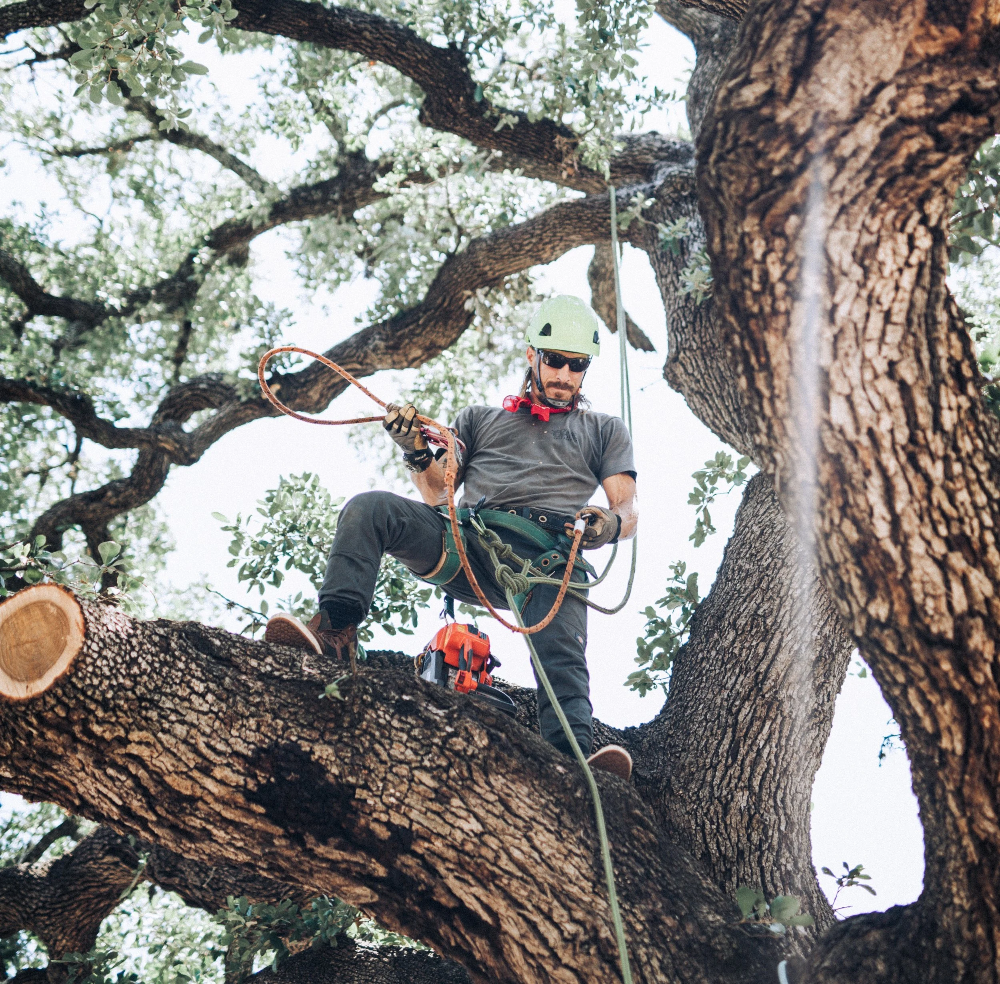

Williamson County · Blackland Prairie
Tree service in Round Rock, Texas
I-35 runs along the line where the Hill Country stops and the blackland starts, and Round Rock sits on that seam.
Same-day callback on estimates
About 45 minutes from me in Kyle. Round Rock sits on the Blackland Prairie, which is what decides how trees behave here. Trimming and stump grinding start at $250, hazardous limb work at $500, removals quoted per tree, and haul-away is included in all of it.
What I see in Round Rock yards
That's not trivia, it's practical. A tree on the west side of town is growing in shallow rocky limestone soil, and one a few miles east is in deep black clay. Same species, different root architecture, different watering, different failure modes. Williamson County contains three ecosystems and Round Rock touches two.
The trees I get called about in Round Rock
Both sides of the seam. West of I-35 it's live oak and ashe juniper in shallow rocky limestone soil; a few miles east it's cedar elm, post oak and pecan in deep black clay, with big hardwoods along Brushy Creek. Same species on either side behave differently — different root architecture, different watering, different failure modes.
How to tell these species apart, and what goes wrong with each one.
The ground underneath: Blackland Prairie
Deep black clay that swells when it's wet and shrinks hard when it's dry. Post oak, blackjack oak, cedar elm, American and winged elm, sugarberry, green ash and honey mesquite. That soil movement is constantly shearing fine roots, and it's behind more mystery decline than any disease.
Permits in Round Rock
I haven't read Round Rock's ordinance closely enough to summarize it here, and I'm not going to guess at a rule that could cost you a mitigation bill. Call the city's planning or development services department and ask two questions: what trunk diameter triggers a permit, and is there a protected species list.
I have verified the rules for Austin, Kyle, Buda and Dripping Springs — those are written up here, along with how to measure your trunk properly, which every one of these ordinances depends on.
Working on a Round Rock property
Ordinary suburban access on both sides of town. Forty-five minutes, batched with other north-side work.
Questions I get from Round Rock
Why does advice for my street not match my neighbour's?
Because I-35 roughly follows the line where the Hill Country stops and the blackland starts, and Round Rock sits on that seam. Watering guidance written for deep prairie clay is close to useless on limestone, and vice versa.
How do I know which soil I have?
Dig six inches. If you hit rock and pale stony clay, you're on the plateau side. If you get dark sticky clay that cracks in summer, you're on the prairie.
Getting me out to Round Rock
Round Rock is about a 45-minute run for me. At that distance it works best batched with other work out that way, so give me a little notice if it isn’t urgent. Call or text me a photo with something in frame for scale and I can usually give you a number without driving out. Estimates are free either way.
One rule that applies everywhere, including here: don't prune oaks between February 1 and June 30. Here's why.

Round Rock at a glance
County: Williamson
Ground: Blackland Prairie
From Kyle: 45 min
Trims from: $250
Tree Trimming & Pruning
Tree Removal
Stump Grinding
Hazardous Limbs & Storm Damage
Nearby
Georgetown · Cedar Park · Leander · Hutto · all 49 towns
Tree work in Round Rock?
Text me a photo. I’ll tell you what it needs and what it costs.
Same-day callback on estimates
Call or text before 5pm on a weekday and you'll hear back from me the same day. Not an answering service — me.